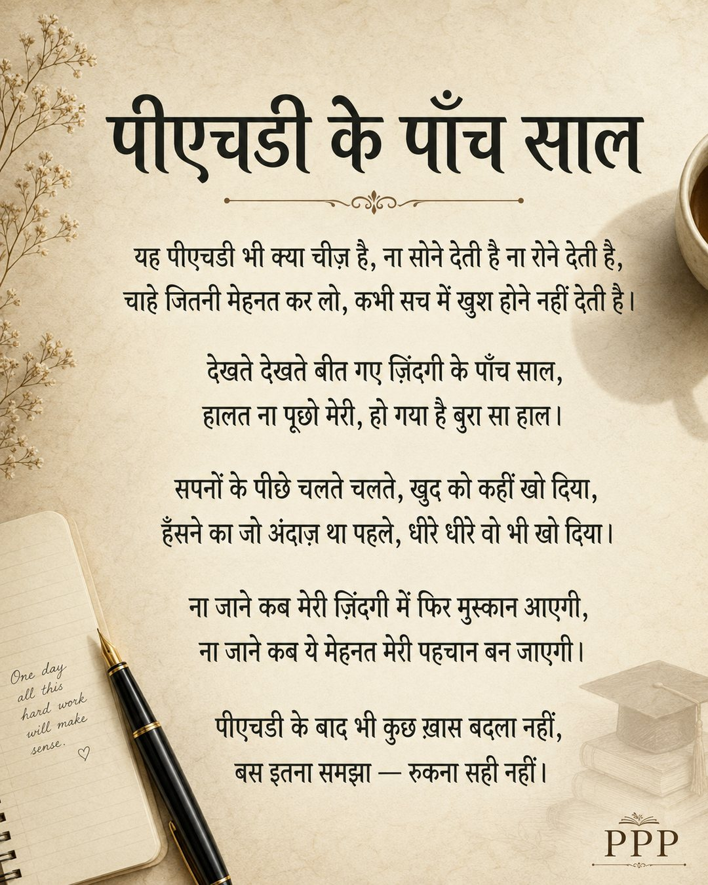

पीएचडी के पाँच साल — थोड़ी थकान, थोड़ा संघर्ष, थोड़ी उदासी, लेकिन साथ में बहुत सारा धैर्य और हिम्मत भी।
यह कविता उन सभी के लिए, जो अपनी मंज़िल के रास्ते में खुद को संभाले हुए हैं। क्योंकि अंत में एक ही बात समझ आती है — रुकना सही नहीं।
Writings
For everyone holding themselves together on the road to their goal.

पीएचडी के पाँच साल — थोड़ी थकान, थोड़ा संघर्ष, थोड़ी उदासी, लेकिन साथ में बहुत सारा धैर्य और हिम्मत भी।
यह कविता उन सभी के लिए, जो अपनी मंज़िल के रास्ते में खुद को संभाले हुए हैं। क्योंकि अंत में एक ही बात समझ आती है — रुकना सही नहीं।